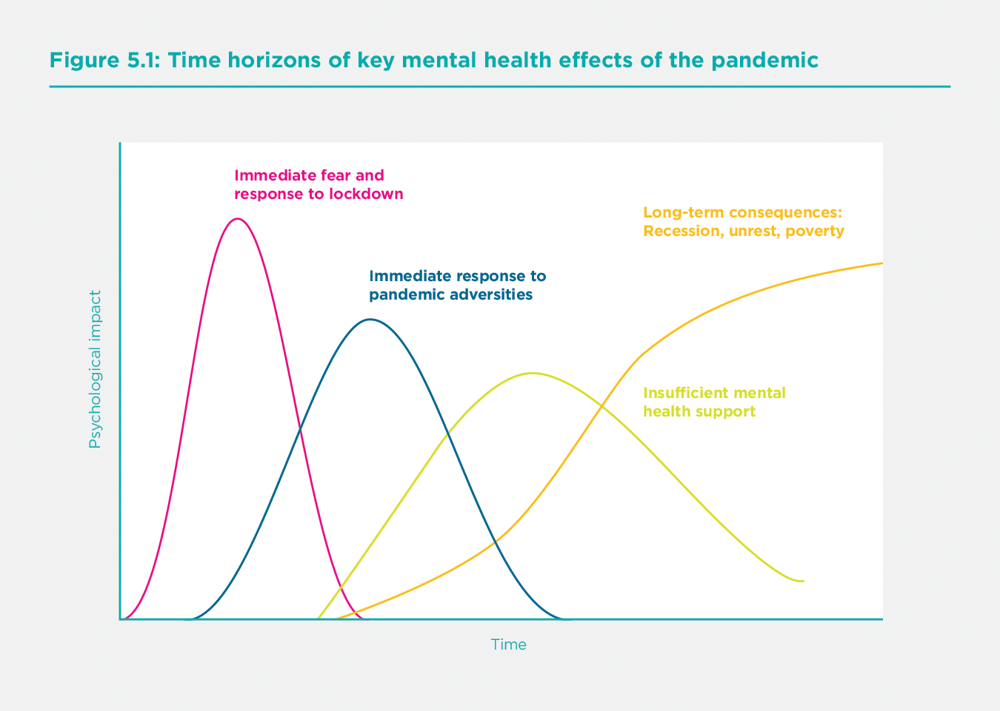
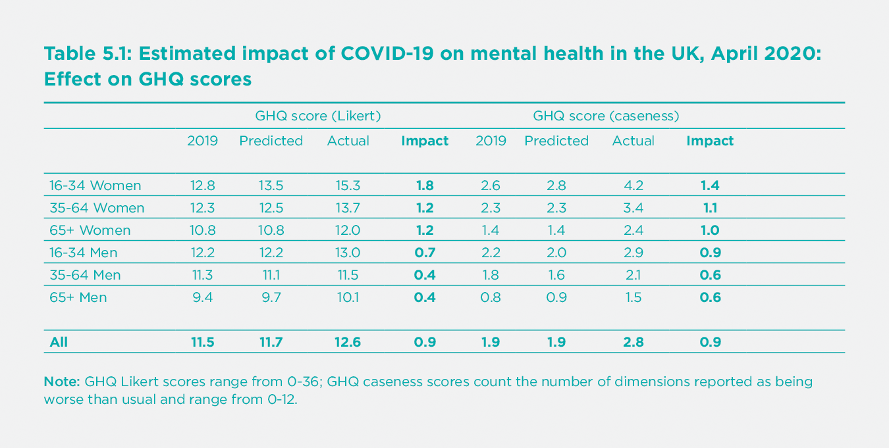
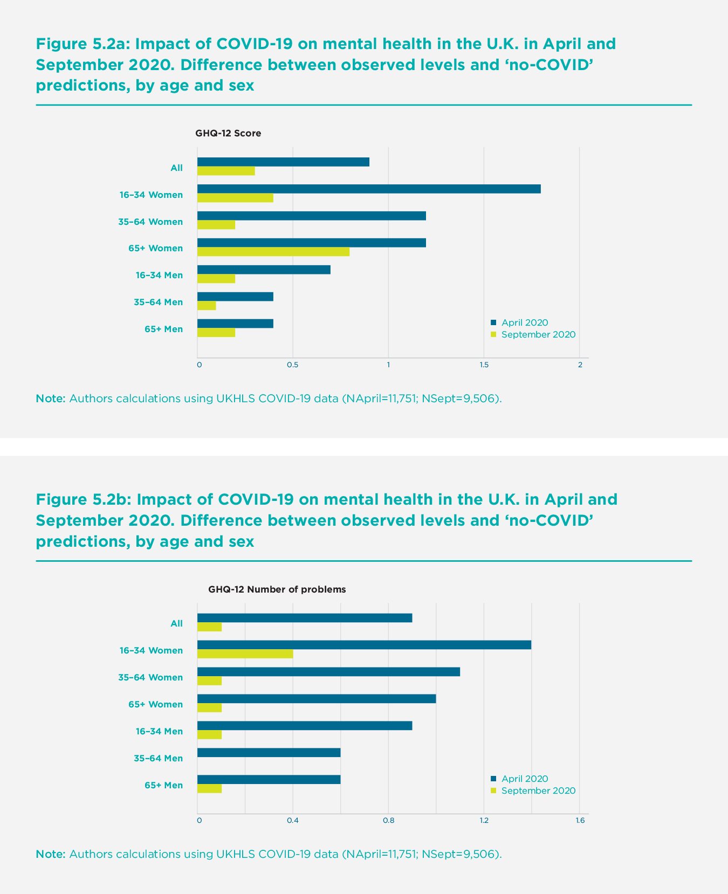
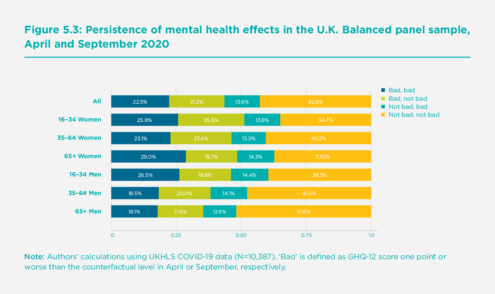
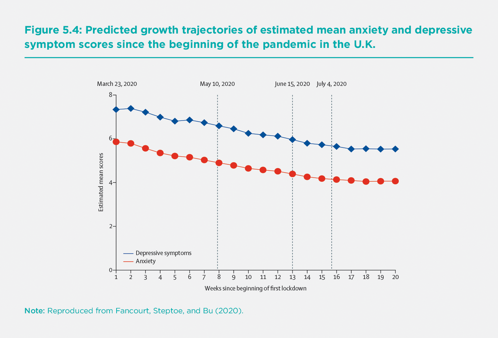
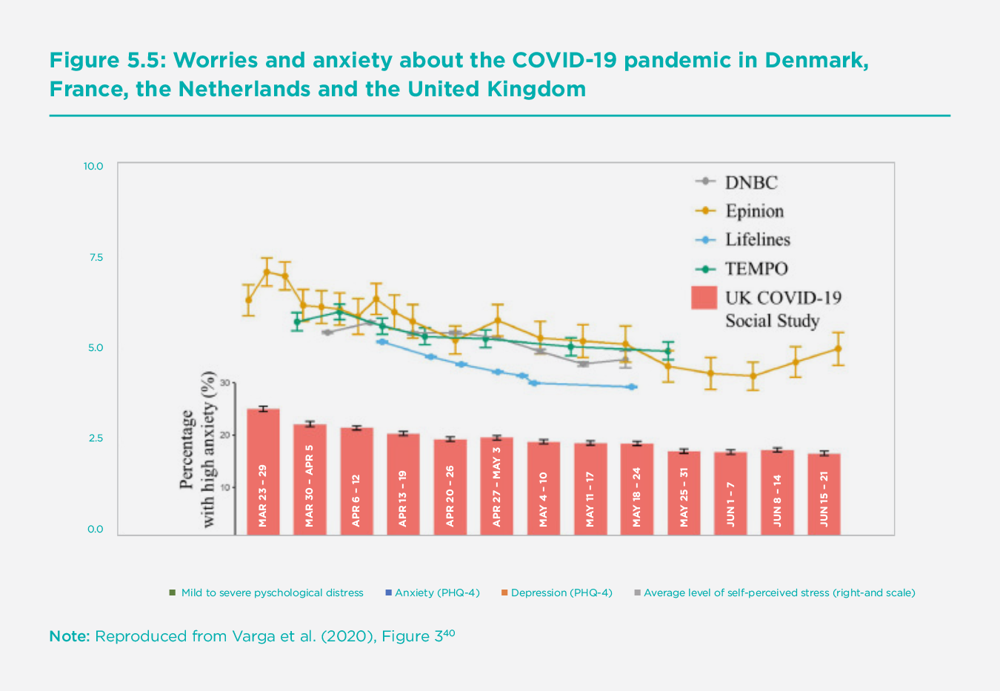
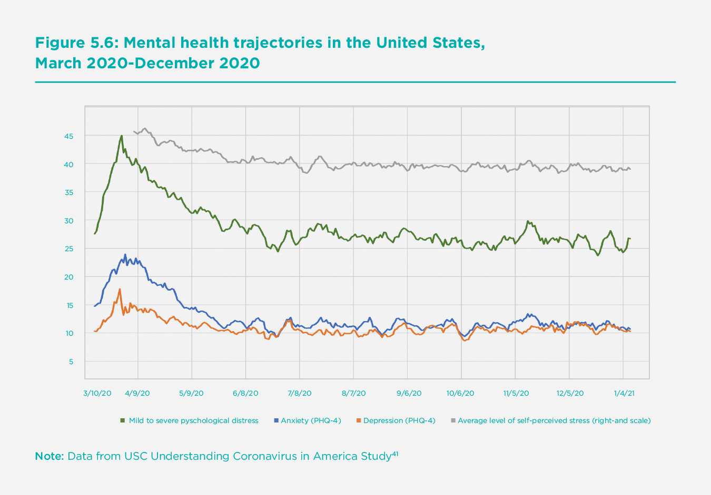

Mental health and the COVID-19 pandemic
Introduction
From the outset, it has been clear that the potential mental health effects of the COVID-19 pandemic and the various physical distancing, social restrictions, and stay-at-home related policies introduced in response to it, would be one of the most important challenges of the pandemic. Mental health is a key component of subjective well-being in its own right and is also a risk factor for future physical health and longevity,[1] which will be a leading indicator of the future, indirect long-run health consequences of the pandemic. Mental health will influence and drive a number of other individual choices, behaviours, and outcomes.
This paper summarises and discusses the emerging evidence on the mental health consequences of COVID-19. Our focus is on negative mental health consequences, such as depression and anxiety, and does not cover life-satisfaction more broadly. Analysis of factors such as social cohesiveness and sense of community, which may relate to positive mental health, are discussed in Chapter 6 of this report. Additionally, it is worth noting that the evidence we discuss here relates only to adults and almost entirely to adults in wealthy industrialised countries, with a strong focus on the U.K. and the U.S. There has been less evidence emerging outside of these domains to date, but as new data become available, these will be important avenues for investigation.
A consistent finding of the rapidly emerging evidence discussed here is that the COVID-19 pandemic has been associated with a substantial rise in symptoms of mental ill-health. In the months following the initial outbreak and lockdown, however, trajectories improved. There is still much uncertainty surrounding the pandemic’s second and third waves and how the associated lockdowns of economic and social activities will affect mental health, including the pandemic’s long-run consequences on mental health trajectories and mental health services. In keeping with other consequences of COVID-19, the pandemic has also appeared to increase inequalities in mental health, both within the population as a whole and between demographic groups.
In interpreting and bringing together the various measures and evidence,[2] it is useful to consider the various mechanisms by which different stressors associated with the pandemic might affect broad mental health measures and the time frames over which these mechanisms might play out.[3] With regard to the former, four main types of mechanisms may be important differentially, or important for different types of individuals.
First, there will be mechanisms related to health-related anxieties directly arising from COVID-19, such as the likelihood of being infected, the chance of being hospitalised or dying, the probability of infecting others, and indeed the possibility of loved ones being infected or dying. These may differ according to an individual’s vulnerabilities and exposure (which affect the underlying probabilities themselves) and also according to perceptions of, and attitudes to, health risk.
Second, there will be the mental health consequences of worries resulting from how the pandemic affects an individual’s financial situation, both in the short and the long run. These worries will likely differ according to socioeconomic position, and according to which countries, regions, or sectors individuals live and work in, and the way in which their economies and economic policies are affected.
There will be a third mechanism related to the complications that arise from domestic family arrangements during times of lockdown or shelter-in-place regulations. In this dimension, one might expect variation according to demographic status (the presence of pre-school or school-age children, housing conditions, etc.).
Finally, the fourth mechanism relates to the direct mental health effects of the loss or restriction of otherwise fulfilling activities caused by the pandemic and the various lockdown policies. These effects might plausibly differ according to pre-pandemic lifestyles and levels of social contact or social networks and by individual differences in the extent to which people can create and gain benefit from online and other types of positive social connections.
As well as varying across individuals, these different mechanisms will play out to different degrees over different time horizons. Figure 5.1 shows four key phases that outline the pandemic’s mental health impacts. The initial two phases are short-run responses within the pandemic. First, to fear of the virus and worries about lockdown measures, and second, to the broader adversities (whether economic or social) created by the pandemic and government responses to it. There will also be longer-term effects of the pandemic due to its subsequent effects on the demand for, and supply of mental health services, as well as the even longer-term mental health consequences of recession, unrest and poverty. It is important to note that this phenomenon will be relevant even in countries where the pandemic has not had sizable direct health effects since there will still be economic consequences through disruptions in trade and travel.
Given the time of this paper’s writing and the available data and research, our summary of quantitative evidence focusses on phases one and two in Figure 5.1. The latter stages relating to the supply of mental health services and the demand for such services amid rising mental health inequalities and long-term mental health consequences of the pandemic’s macroeconomic impacts, may well be substantial. Whilst we don’t have much evidence on these phases to date, they should be uppermost in policymakers’ and researchers’ minds. More generally, the precise scale, timing, and duration of these phases (which are only plotted indicatively in Figure 5.1), as well as any interactions between them, will be necessary to analyse. Disruption to mental health services, and specific challenges in accessing mental health medication and support during lockdowns, for example, will affect all the other phases. We will return to some of these issues in our conclusions below.

Measuring mental health during the pandemic
One of the many challenges of COVID-19 has been the difficulty in collecting evidence, whether through new real-time studies or the continuation of pre-existing data collection activities such as cross-sectional or longitudinal household surveys. The research community has stepped up to the challenge, and the availability of new data has been impressive. There is, however, considerable variation in the data sources underlying the emerging evidence on mental health. In particular, data on mental health during the pandemic comes from one of three types of sources.
A number of pre-existing cross-sectional or longitudinal surveys have implemented other COVID-19 data collections, typically online and by phone. The availability of pre-COVID-19 data is a clear advantage of such surveys. The drawback is that the sample sizes in new COVID-19 waves tend to be relatively small (in comparison to other data sources discussed below). Many surveys have carried out just one or two observations during the COVID-19 period. A notable exception is the Understanding Society (UKHLS) panel in the U.K., used in this paper, which implemented monthly and bi-monthly surveys from April 2020 onwards.
Second, many bespoke COVID-19 studies have been set up to track mental health over the course of the pandemic (see https://www.covidminds.org/longitudinal-studies). Key among these is the UCL COVID-19 Social Study, the USC Understanding America Panel, and equivalent studies in European countries. Whilst these studies provide large-scale, high-frequency data on changes in mental health during the pandemic, they do not contain information from before the onset of COVID-19, which makes it difficult to estimate the impact of the pandemic. Further, sampling techniques have varied from random samples to quota or weighted samples to convenience samples. The representativeness and comparability of the data can be challenging in interpreting findings.
Finally, researchers have drawn on harvested data from internet searches, helplines, and hospital records. A key strength of these sources is that they tend to provide large sample sizes and high-frequency data from both before and after the pandemic. The drawback is that these data typically contain very little information on demographics and other characteristics and may not represent the general population.
Given the variation in data sources and data collection methods, it is not surprising that many mental health measures are in use. Survey data, and the primary studies used in our empirical analysis, typically include summary measures of overall mental health such as the GHQ-12,[4] more specific measures such as the GAD-7 for anxiety,[5] the CES-D[6] or PHQ-9 for depression,[7] or short screening scales such as the PHQ-4 that cover both.[8] Such surveys often also measure other factors (for example, the UCLA scale for loneliness or various social isolation measures) that can be crucially important in understanding mental health and its drivers. Harvested data contain other proxy outcomes for mental health, such as suicides, self-harm, the number of calls to helplines, and internet searches for mental health-related keywords.
As there is no single dominant measure or data source on mental health during the pandemic, it is not straightforward to quantify effects across studies. In what follows, we draw on data sources as appropriate. Evidence from pre-existing surveys and harvested data help to identify and quantify the initial causal impacts of COVID-19. Bespoke surveys are useful in tracing out variation in mental health trajectories over the course of the pandemic. What is apparent is that the key themes emerge regardless of the measurement issues - the triangulation of data from studies using different samples and methodological approaches provides some reassuringly consistent messages as to the mental health impact of the pandemic.
The initial mental health effects of the pandemic
Most developed countries saw a large immediate decline in mental health after the pandemic outbreak compared to earlier points in time, typically measured between 2017 and 2019. By comparing different cross-sectional surveys in the U.K., the ONS reported a 12.3 percentage-point fall in numbers reporting low happiness and a 28.6 percentage point rise in those reporting elevated anxiety between the last quarter of 2019 and March 2020. Over the same broad period, feelings of life being worthwhile fell from 7.86 to 7.42, and life satisfaction fell from 7.67 to 6.91, both measured on a scale of 0 to 10.[9] Repeated cross-sectional surveys also show a rise in the prevalence of depressive symptoms, from 9.7% among adults in July 2019-March 2020 to 19.2% in June 2020.[10] In the U.S., bespoke COVID surveys in April-May 2020 show significantly higher rates of poor mental health compared to comparable surveys in 2018[11] and higher levels of loneliness.[12] Data from representative cohort studies across the world also show increases in average scores of psychological distress and a rise in the share of people experiencing clinically significant levels of mental illness in the first few weeks of lockdown, compared to data collected prior to the pandemic.[13]
Whilst important, comparisons of mental health levels before and after the pandemic cannot be taken as estimates of the pandemic’s causal effect. They do not account for what would have happened in the absence of the pandemic. For example, some mental health measures in the U.K. had already been worsening in recent years, before the COVID-19 outbreak. Since this trend may well have continued even in the absence of the COVID-19, attributing the entire decline in mental health between pre-pandemic years and Spring 2020 to COVID-19 would lead us to overstate the effect of the pandemic. Importantly, Banks and Xu show that pre-existing mental health trends differ across demographic groups: mental health deteriorated much more sharply among younger age groups than older groups between 2014 and 2018.[14] This means that naïve before-after comparisons could also lead to incorrect estimates of the relative effect of COVID-19 across groups.
Secondly, simple comparisons do not account for seasonal trends in mental health, which may be necessary when assessing mental health at a single point in time, as is typical in ‘real-time’ COVID-19 studies. Banks and Xu show that there are seasonal trends in GHQ scores, with mental health improving in the spring and summer months and declining in the autumn and winter.[15] A sample observed entirely at one point in time (for example, April 2020) is not comparable to samples in previous surveys, typically interviewed over an entire year.
Causal estimates of the initial effects of the pandemic
Given these issues, researchers have adopted two strategies to estimate the causal effect of COVID-19 on mental health. One strand of research uses variation in the timing of the disease outbreak and/or the public health response across different areas (countries or different regions within a country) to identify the causal effect. Much like a randomised trial, the underlying assumption is that mental health trajectories across areas would have evolved to preserve pre-existing differences, so any subsequent deviations between areas can be attributed to the pandemic. Another set of studies attempt to explicitly model mental health levels over time using historical longitudinal data in a single country or area, in order to create a counterfactual prediction for what would have happened without COVID-19. The assumption here is that pre-pandemic trends, defined for specific demographic groups, would have continued in the absence of the pandemic, so deviations from those trends can be interpreted as the effects of the pandemic. We now discuss each type of evidence in turn.
Variation in the timing of the pandemic and lockdown
Typically, studies that use variation in events’ timing require high-frequency data and have relied on trends in Google searches and calls to helplines as proxies for mental health, rather than survey data with conventional mental health measures. Brodeur track Google searches for well-being related keywords in Western European countries and the U.S.,[16] comparing searches pre- and post-lockdown in 2020 to the same dates in 2019, controlling for seasonal patterns of searches within countries and states. They find a substantial increase in the search intensity for boredom, at two standard deviations in Europe and over one standard deviation in the U.S., as well as smaller statistically significant increases in searches for loneliness, worry, and sadness. On the other hand, search intensity for suicide and divorce fell when lockdowns were imposed. Analysing changes in Google searches over time (but not variation in timings across areas), Knipe[17] and Tubadji also find a fall in searches for suicide.[18] However, the former finds an increase in searches for fear, and the latter increases in searches for death, starting in March 2020. Foa finds that most of the rise in ‘negative’ search terms (psychological stress, boredom, fear, etc.) in developed countries took place before the start of the first lockdown, before stabilising and falling over the course of lockdown.[19]
Armbruster and Klotzbuecher find that the number of calls to Germany’s largest online and telephone counselling helpline service increased by 20% in the first week of lockdown.[20] Analysis of the conversations’ content suggests that this increase was driven by heightened loneliness, anxiety, and suicidal ideation rather than fear of the virus or financial worries. Looking across German federal states and controlling for differences in infection rates, they find larger effects in states that imposed stricter lockdown measures, suggesting that the deterioration in mental health was partly driven by the public health response to the virus instead of the virus itself. In contrast, helpline data from Switzerland do not show an increase in the total volume of calls resulting from the pandemic,[21] with an increase only in calls directly related to the virus (calls by the elderly and calls about fear of infection).
The results suggest some deterioration in mental health as a direct result of the pandemic, though not along all dimensions, with some contradictory results. Conflicting findings may reflect differences in impacts across countries (for example, Germany versus Switzerland) or the manifestation of mental health issues in different behaviours (for example, the link between suicidal ideation in Google searches versus helpline calls). But it is difficult to draw clear conclusions from this evidence, partly because the outcome measures used cannot be directly related to common measures of mental health. Furthermore, because they rely on data from a self-selected group (those who use Google search or those prone to calling helplines), their findings may not represent the general population.
Studies that use variation in timing to identify effects typically use harvested data, making it challenging to study how the pandemic’s mental health impact varies across demographic groups.[22] One notable exception is the study by Adams-Prassl who use two survey waves in March and April 2020 and identify the causal effect of lockdowns across the U.S. using variation in the timing of stay-at-home orders.[23] They measure mental health using the WHO-5 module and find that mental health deteriorated by 0.1 standard deviations in states that imposed lockdowns in April, with the effect entirely driven by women. These states had had similar mental health levels in March. As the surveys contain detailed information on people’s experiences over lockdown, they can establish that women’s differential effect cannot be explained by increased financial worries or additional childcare responsibilities.
A number of sources have suggested that during COVID-19, mental health deteriorated prior to lockdown or stay-at-home orders coming in. Once lock- downs were introduced, mental health stabilised and even began to improve.
Modeling counterfactual mental health levels
The second strand of research tries to identify the pandemic’s causal effect by estimating counterfactual levels of mental health in the absence of the pandemic, using longitudinal data from previous years. Banks and Xu model individual-level counterfactuals in April 2020 using longitudinal data spanning several years before the pandemic,[24] taking account of age profiles in mental health, seasonal trends, gender- and age-specific trends, and changes in observed personal circumstances between the latest pre-pandemic wave (in 2017-18) and the period immediately before the pandemic. They estimate that average GHQ scores using the Likert 0-36 point metric rose by 0.9 points as a result of the pandemic, indicating a worsening of mental distress by 0.17 of a standard deviation of the pre-pandemic distribution. The causal effect is smaller than the simple difference between April 2020 and 2017-18 (1.2 points) for the reasons discussed above. Still, it is a considerable deterioration, roughly equivalent in size to the mean difference in GHQ scores between the top and bottom quintiles of the income distribution in 2017-18, and nearly double the deterioration between 2013 and 2018. The GHQ-12 caseness score, which captures the number of mental ill-health dimensions reported as being worse than usual, deteriorated even more. Individuals reported an average of 0.9 more mental health problems out of a possible 12 – a difference equivalent to 0.3 of a standard deviation and twice the pre-pandemic difference between the top and bottom income quintiles.[25] Finally, the share of the population reporting one or more of the 12 dimensions being ‘much more than usual’ more than doubled relative to the counterfactual prediction, from 10% to 24%. Pierce adopts a similar approach,[26] estimating the deviation from individual-level predictions using the same dataset, finding a 0.5-point increase in average GHQ scores. However, their main estimates may well be an underestimate of the causal effect due to the particular modeling approach taken.[27]
The advantage of modeling counterfactual mental health levels using rich survey data is that it allows us to examine differences between groups and the mechanisms through which mental health changes arise. However, one drawback is that results may be sensitive to the model specification. As shown by the differences between Banks and Xu,[28] and Pierce[29] model specifications for the counterfactual will matter. Results are also sensitive to the period used to fit the model and predict the counterfactual. They use data up to 2017-18, as this was the latest wave of the survey available at the time each analysis was conducted. Since then, survey data up to 2019 has been released, allowing us to revise and improve our estimate of pre-pandemic trends, hence the pandemic’s estimated initial impact.
Table 5.1 shows the updated estimates of the mental health impacts of COVID-19, incorporating the 2018-2019 data and based on the methodology of Banks and Xu.[30] Estimates of the overall impact in April 2020 are unchanged – GHQ-19 scores rose by 0.9 points relative to the predicted value in April 2020 of 11.7, representing a deterioration in mental health of 7.9% using the GHQ-12 Likert metric. The GHQ-12 caseness score, capturing the number of dimensions reported worse than usual, rose by 47% from 1.9 to 2.8. As with the previous analysis (and as discussed in detail in section “The evolution of mental health during the pandemic” below), Table 5.1 shows clearly that the pandemic had the most considerable effects on women and young people.[31]

The evolution of mental health during the pandemic
The findings on the initial effects of the pandemic on mental health discussed above echo those from studies of previous epidemics such as SARS (severe acute respiratory syndrome), during which individuals who had to quarantine experienced increases in symptoms of depression and PTSD.[32] But it has now become clear that the trajectory of subsequent experiences has differed from previous epidemics. A number of sources have suggested that during COVID-19, mental health deteriorated prior to lockdown or stay-at-home orders coming in. Once lockdowns were introduced, mental health stabilised and even began to improve. Initial U.K. evidence on this began to emerge quite rapidly from the study of trajectories between March and June.[33] We provide some further evidence on trajectories over the six months leading up to September 2020, both in the U.K. and elsewhere.
Changes in the U.K. between April and September
The section, The initial mental health effects of the pandemic, discusses the immediate impacts of the COVID-19 outbreak on mental health during the first lockdown in the U.K. and elsewhere. From May 2020 onwards, many of the early stringent restrictions were relaxed. Schools reopened in many countries and regions, and as sector shutdowns were lifted and businesses learned to adapt to the new environment, many furloughed workers returned to work. Nevertheless, individuals’ lifestyles, and their material circumstances, were still dramatically affected compared to before the pandemic, so it is natural to ask how these changes affected subsequent trajectories of mental health after the first initial shock.
We repeat the exercise in Banks and Xu using the September wave of the UKHLS,[34] estimating the pandemic’s impact on mental health in the U.K. in September by comparing actual mental health levels to individual-level counterfactual predictions for that month. Figure 5.2 presents the pandemic’s estimated causal effects across age and gender groups in April 2020 and September 2020. The bars labelled April 2020 correspond to the ‘impacts’ of the pandemic in April, as listed in Table 5.1 above. The second series is the equivalent estimates for September 2020. Figure 5.2 shows that mental health across the population improved substantially over the course of the summer, though by September, it had not yet returned to counterfactual trend values, with average GHQ scores still 0.3 points above the counterfactual prediction (compared to 0.9 points above in April 2020).
There are considerable differences in the relative persistence of initial effects across demographic groups. Young women age 16-34 had by far the worst initial mental health shocks (their GHQ scores increased by twice the overall increase), but they were not much worse off than the general population by September. In contrast, the mental health shock suffered by elderly women was remarkably persistent, and by September, they were the group experiencing the most considerable deterioration relative to the counterfactual. These patterns of adaptation and persistence mean that the impact of COVID-19 on mental health was much less unequal (across age and gender groups) in September than in April.

Using the balanced panel of respondents to UKHLS who responded to both the April and September surveys, we can also explore trajectories at the individual level. We define an individual as ‘badly affected’ if, at the point of the interview, their GHQ-12 score was one or more points worse than would have been predicted given their (individual-specific) ‘no-COVID’ counterfactual value for that month. We then assign individuals to one of four groups according to whether they were ‘badly affected’ in each of the two waves.
Figure 5.3 shows the distribution of April to September trajectories by age and gender group. A substantial fraction of the population (22.5%) was severely affected in both waves; this large group experienced a sustained period of poor mental health relative to their previous levels. On the other hand, and in keeping with evidence in Figure 5.2, there was also evidence of improving trajectories. Almost half of those who were badly affected in April were no longer ‘badly’ affected in September (i.e., their GHQ-12 score worsened by less than one point). Whilst a non-negligible fraction of the population (13.6%) had entered the badly affected group, the overall affect is still a reduction in the size of the badly affected group by September. When split by age and sex, these trajectories also show important differences in the persistence of mental health effects across groups. For example, whilst younger women were most severely affected in April, their recovery rate was relatively high. Looking at the groups with the highest prevalence of persistent poor mental health, older women and younger men have been most affected. Men of all ages, and older men, in particular, are least likely to have been in the persistently badly affected group.

With multiple covariates available, it is possible to look deeper into the individual-level determinants of membership of these transition groups. In Appendix A1, we present a simple logistic model to look at the characteristics of the persistently badly affected group, including controls for individuals’ health, economic situation, and social and demographic circumstances.[35] Substantial differences between age-sex groups remain, even when controlling for the differential other circumstances. Women over 65 are 1.77 times more likely to be persistently badly affected than the reference group of middle-aged men, and 16-34-year-olds of both sexes are around 40% more likely to be in the persistently badly affected group, even controlling for the other circumstances of these groups. The covariates in these models show some preliminary evidence of the various mechanisms by which the pandemic might affect mental health, as discussed in the introduction. Those with COVID-19 symptoms in either April or September, those who lost work after April 2020, or those reporting closer friends pre-pandemic, were all more likely to be in the persistently badly affected group.[36] Those in strong romantic relationships (who reported their relationship quality as ‘very happy’ or better) had a reduced likelihood of being persistently badly affected, highlighting the importance of the nuclear family at a time when social circles have shrunk outside of the household.
Detailed evidence from within-pandemic trajectories
Since detailed COVID-19 studies have started up since the onset of the pandemic, it is also possible to look at within-pandemic trajectories with much more specific measures of mental health, both in terms of the mental health measures themselves and in terms of the periodicity of measurement. In this section, we begin by looking again at the U.K. context before turning to evidence from other countries.
The UCL COVID-19 Social Study involves repeated weekly assessments of a large sample of over 70,000 adults living in the U.K. from the start of the first U.K. lockdown in March 2020. As the study lacks pre-pandemic data on respondents, it does not aim to provide prevalence data on symptoms. Instead, it identifies how and when psychological and social experiences changed during the pandemic and how these changes coincided with changes in the spread of the virus, social restrictions, and broader societal disruptions. Exploring the average symptom trajectories of anxiety and depression across the first lockdown and beyond, Fancourt, Steptoe and Bu show both to be above previous national averages at the start of lockdown,[37] echoing research from the generic mental health measures in the studies mentioned above, with a steady decline from early April and onwards. This decline continues as lockdown restrictions were eased in May, June, and July, flattening over the summer when restrictions were at their lowest (see Figure 5.4)[38].
The findings reinforce the general conclusions on trends seen in the UKHLS data above and provide insight into when improvements occurred. Furthermore, such studies offer the possibility of examining different effects on mental health's various dimensions. The key result on improving trajectories is further echoed in data emerging from COVID-19 mental health studies in other countries. Figure 5.5 compares the trends in the U.K. data with international data from similar studies in Denmark, France, and the Netherlands and shows decreases in the percentage of people experiencing high anxiety from early in the Spring in all countries.[39]


Figure 5.6[40] presents data for the United States from the USC Understanding Coronavirus in America Study and shows the same improvement after the initial lockdown, both in the prevalence of anxiety and depression, and in other mental health measures such as self-perceived stress.

Notably, there is consensus among a number of international studies that mental health started to improve early during the lockdown, suggesting that the pandemic’s psychological burden was, on average, felt most acutely by individuals in the early stages before decisive actions to control the virus were brought in. This finding went against some predictions that lockdown itself could drive increases in poor mental health, and diverges from data on previous epidemics, where mental health worsened during periods of quarantine.[41] One explanation for these differing results is that the unique circumstances of the COVID-19 pandemic (such as the substantial lead-in period to, and thus anticipation of, lockdown being announced, the national nature of the restrictions, and the social emphasis on self-care, including the continued allowance of outdoor exercise and proliferation of online leisure activities) may have led to a different kind of psychological experience than previous epidemics.[42] But there are other potential explanations too. If we consider the literature on other types of isolation, such as incarceration, studies have shown that depression levels can stabilise and even improve over time as people adjust to their new circumstances and develop coping strategies. It is possible that adults in the U.K. and elsewhere faced a similar psychological adjustment process during lockdown.
Furthermore, the instigation of lockdown brought an immediate reduction in the number of stressors relating to the pandemic. People reported experiencing fears about catching or becoming seriously ill from the virus to concerns about finances and jobs (potentially owing to the measures brought in by the government around the same time) and worries about accessing food and other essentials.[43] Notably, both the worries about these adverse experiences and experiencing them first-hand were related to worse anxiety and depression during lockdown. Future research using these detailed COVID-19 studies will identify correlations between these mental health trajectories in a multivariate setting.
COVID-19 and mental health inequalities
The pandemic has so far led to a substantial initial deterioration in mental health, followed by a degree of recovery, but these effects have not been evenly felt across different groups. Differences between groups reflect and shed light on the mechanisms through which the pandemic affects mental health – fear of the virus, health impacts, social restrictions, economic recession, and so on – which differentially affect parts of the population. In many ways, the initial impact of COVID-19 has exacerbated pre-existing mental health inequalities between men and women, the old and the young, and between ethnic groups. However, these impacts are evolving as the pandemic goes on.
Many studies, using a variety of data sources and mental health measures, show that the pandemic led to a larger decline in mental health among women, who already had worse levels of mental health than men before the pandemic hit.[44] Whilst women bore the brunt of the additional childcare that resulted from school closures,[45] additional caring duties explain only a small fraction of the gender differences in the initial impact of the pandemic.[46] Nor can they be explained by differences in men’s and women’s exposure to the pandemic’s health and economic consequences, for example, the fact that women disproportionately work in sectors affected by physical distancing.[47] Instead, Etheridge and Spantig point to the importance of social factors in explaining gender differences and demonstrating that women had larger social networks than men before the pandemic.[48] They argued that they were therefore hit harder by the social restrictions imposed as part of the public health response.
In the pandemic’s initial stages, the mental health impact was also much larger on young people.[49] Since young people had worse mental health levels before the pandemic, this served to widen mental health inequalities by age. However, (as shown in the earlier section, The evolution of mental health during the pandemic) the gap narrowed over the course of the pandemic as young people’s mental health returned to normal more quickly[50] – perhaps reflecting higher adaptability to shocks among this group as well as positive changes in circumstances that disproportionately benefitted the young, like the (temporary) lifting of social restrictions and the reopening of schools and universities. Data from the U.S. (presented in Appendix Figure A2) show that the percentage of people experiencing psychological distress was greatest in the under 40 age group. In contrast, to mental health levels that would be expected without covid, there has been less catch-up or convergence as the pandemic has progressed.
The pandemic has also disproportionately affected the physical health of ethnic minorities both in the U.K. and the U.S.[51] Research that examines mental health impacts by coarse ethnic groups (white/non-white, or pooling across genders) has typically not found statistically significant differences, after removing effect of factors such as gender, age, and exposure to the virus’s health and economic impact.[52] Looking at finer ethnic groups and disaggregating by gender, Proto and Quintana-Domeque find a larger initial impact on mental health among men of Bangladeshi, Indian, and Pakistani ethnicities in the U.K…[53] An important question for future research is whether ethnicity differences are also found in other developed countries and how much they remain in models that control exposure to the pandemic's various socioeconomic effects.
Those who lost their jobs and suffered income shocks saw particularly sharp deteriorations in mental health. Workers in sectors that were shut down during the first lockdown (retail, hospitality, creative industries, etc.) experienced larger impacts even if their jobs were not directly affected.[54] People of lower socioeconomic positions were also more likely to experience adversities, including loss of employment and income, challenges meeting basic needs (such as accessing food and medications), and experiences directly relating to the virus, including contracting or becoming seriously ill from COVID-19.[55] Moreover, these experiences were more strongly related to poor mental health amongst those with lower household incomes.[56]
There is also some evidence that healthcare workers have suffered particularly bad mental health shocks.[57] These are likely to have exacerbated the already high rates of pre-existing mental health problems among this group.[58] Alonso,[59] for example, use a bespoke large scale survey (N=9138) to estimate that, on average, 1 in 7 healthcare workers in Spain presented a disabling mental disorder, with this fraction becoming 4 in 10 for those workers with any pre-pandemic mental health disorder. However, critical workers in general (including other occupations like teachers, retail food workers, and delivery drivers) appear to have experienced better mental health trajectories, perhaps due to the greater recognition given to their professions as a result of the pandemic.[60]
Finally, inequalities in mental health levels between certain groups are an ongoing cause for concern, even if the groups with poor mental health pre-pandemic were not disproportionally affected by the pandemic. Figures A3 and A4 in the appendix reveal stark differences in mental health between income groups in both the U.S. and U.K. that have persisted throughout the pandemic so far. Similarly, differences in the household composition may be significant. Without identifying causal effects relative to a counterfactual, trajectory data from the U.K. show that adults living alone experienced worse levels of depressive symptoms (although their mean anxiety levels were no different from those living with others). This could be due to higher levels of loneliness caused by social restrictions, which were felt more amongst this group.[61] Individuals living with children showed higher levels of anxiety and depressive symptoms initially but a faster rate of improvement, potentially due to the growing public awareness of research suggesting that children were less affected by COVID-19.[62] Whilst these inequalities are well reported outside of pandemic settings, the wider gap between the groups seen in the early stages of the pandemic suggests an exacerbation of such inequalities during COVID-19.
Conclusions
There is no doubt that the initial effects of the COVID-19 pandemic on mental ill-health symptoms were large, negative, and remarkably consistent across the data and studies discussed here. It is worth reiterating that these relate only to adults and solely to wealthy industrialised countries. These effects were worst in younger age groups and women, ethnic minorities, and those with pre-existing mental health problems, thus reinforcing many pre-existing mental health inequalities.
In the months following the outbreak, however, the story has been more positive. The evidence in many countries suggests that, following the initial shock to mental health, measures in all dimensions recovered considerably, although not completely. In the U.K., for example, one simple metric of mental health worsened by 7.9% initially, and we estimate that by September 2020, it was still 2.2% below the level it would have been in the absence of the pandemic. In addition, while there is very little large-scale evidence on the most extreme consequences of mental health problems - suicide and self-harm – what evidence there is has yet to show any consistent or significant trends in terms of causal effects of the pandemic.[63] And the rapid discovery of a vaccine, leading to the immediate roll-out of vaccination programmes, will provide grounds for optimism for many individuals.
Notably, mental health has quickly risen high on policymakers’ and researchers’ agenda,[64] as evidenced by the Lancet COVID-19 Commission Mental Health Task Force, which will report in February 2021. Indeed, those without previous specialisation in mental health issues will have considerably more appreciation for the importance and role of mental health and key factors such as loneliness, social isolation, and social support than before. This new energy, coupled with the vast amounts of data collection that are now going on, should lead to important new insights, both on the COVID-19 effects and on the drivers of mental health levels more generally. Indeed, the varied experiences of countries and regions within the pandemic provide fertile ground for researchers studying the drivers of mental health in a way that can and will inform policy going forwards. There are already exciting prospects for longitudinal research on trajectories for anxiety, depression, and loneliness that will distinguish between the roles for the virus, the economic consequences of policy responses to the virus, and the local physical distancing and stay-at-home restrictions. And as more internationally comparable data emerge, there will be further prospects for international comparative research. Both will provide a more global understanding of mental health effects around the world and enable researchers to exploit international differences in the impact of the pandemic and governments’ reactions to it to identify causal processes.
Given our analysis’s timing, there is still much uncertainty on how the full mental health consequences of COVID-19 will play out. We can only speculate at this point, but there are many potential causes for ongoing concern. With regard to the first two phases of effects that we identified in Figure 5.1: Whilst the improving trajectories post-May 2020 suggest that the second phase may not have been as bad as feared on average, it is still the case that a substantial group of individuals have had persistent large, negative shocks to their mental health. Furthermore, at the time of writing, many countries are going into lockdowns and extensive social and economic restrictions as a result of the second and third waves of the virus and its new highly infectious variants. In the U.K., COVID-19 Social Study data are already showing some deterioration again. It remains to be seen how relative impacts will evolve as the gradual vaccine roll-out alleviates the pandemic’s health risks, that bear more heavily on older people, whilst the ensuing recession and lockdowns damage job prospects and social activities of all, but particularly the young.
Perhaps more importantly, however, is that the third and fourth phases of mental health effects that we identified in Figure 5.1 are only just beginning to play out, and these may turn out to be the most consequential. Certainly, mental health and inequalities in mental health will need to be foremost in policymakers' minds as they respond to the pandemic’s continued challenges and then the need to rebuild the economy. With regard to phase three, there is already emerging evidence of disruption to mental health services around the world (WHO 2020), and the increased burden on such services (and on healthcare in general) could exacerbate current and future mental health problems and mental health inequalities. Indeed, the pandemic’s effect on healthcare itself may make it hard to return to normal mental health care levels, let alone provide the additional services needed given the increased burden caused by COVID-19. And looking beyond this- the long-run effects of the pandemic's economic consequences on mental health could be substantial. We know that COVID-19 will undoubtedly cause extensive and persistent recessions around the world (even in those countries without major outbreaks of the virus). It is hard to speculate precisely on the magnitude of the mental health consequences since the economic shocks have been of a nature and size that we have not seen in modern times. Focusing on the different stressors caused by the pandemic and the various mechanisms by which these stressors have their mental health effects, as well as the continual measurement and monitoring of all population subgroups, will help researchers derive long-run estimates effects in as timely a manner possible. Such research should be treated as a priority. This will be particularly crucial for younger generations, who will be most heavily affected by the long-run economic consequences and who are already a group with poor mental health and high mental health inequalities.
Endnotes
see Kivimäki et al. (2017) ↩︎
Mechanisms are the processes – the ways in which risk factors turn into outcomes. ↩︎
Stressors are objects - the risk factors themselves. ↩︎
see Goldberg et al. (1997) ↩︎
Spitzer et al. (2006) ↩︎
Radloff et al. (1977) ↩︎
Kroenke et al. (2001) ↩︎
Kroenke et al, (2009) ↩︎
ONS (2020a) ↩︎
ONS (2020b) ↩︎
McGinty et al. (2020); Swaziek and Wozniak (2020) ↩︎
Kilgore et al. (2020) ↩︎
Pierce et al. 2020, Shanahan et al. (2020) ↩︎
Banks and Xu (2020) ↩︎
Banks and Xu (2020) ↩︎
Brodeur et al. (2020) ↩︎
Knipe et al. (2020) ↩︎
Tubadji et al. (2020) ↩︎
Foa et al. (2020) ↩︎
Armbruster and Klotzbuecher (2020) ↩︎
Brülhart and Lalive (2020) ↩︎
For example, studies using Google trends cannot disaggregate searches by the characteristics of those searching. Even if this were possible, researchers could not distinguish between the pandemic having a larger effect on the mental health of certain groups, or certain groups being more inclined to search for well-being-related keywords in response to a given fall in mental health. ↩︎
Adams-Prassl et al. (2020) ↩︎
Banks and Xu (2020) ↩︎
Measured using 0-12-point GHQ Caseness scale, where each of the 12 items of the questionnaire is assigned a score of 1 if the respondent experiences the negative (positive) event less (more) or much less (much more) than usual. ↩︎
Pierce et al. (2020) ↩︎
The modeling in Pierce et al. (2020) does not control for seasonal trends and also differs from Banks and Xu (2020) in a number of other ways: it uses a quadratic (rather than linear) time trend, does not allow trends to differ across demographic groups, and does not control for changes in mental health over the lifecycle or changes in individual circumstances such as marital status and (pre-pandemic) employment outcomes. Most importantly, it includes the April 2020 data in estimating individual fixed effects, which is likely to lead to downward bias in estimated effects. ↩︎
Banks and Xu (2020) ↩︎
Pierce et al. (2020) ↩︎
We depart from the specific Banks and Xu (2020) methodology in a few other ways here. First, the sample in Banks and Xu was restricted to those observed in the 2017-18 wave of the survey, whereas we now include all individuals observed in 2019. Second, the addition of further waves of the survey means that we are able to identify individual fixed effects for more individuals. Third, given the larger sample, we estimate our prediction model using only individuals in the Covid waves. Fourth, we define age groups based on their 2019 values, as opposed to their April 2020 values. Fifth, age groups are defined in a more disaggregated way, to allow comparisons to September 2020 figures in Figure 5.2 (for which the sample size is much smaller). Finally, we use revised cross-sectional weights issued by UKHLS. ↩︎
The revised estimate of the impact on young men is smaller than in Banks and Xu (2020), however. This is because the new data reveal a sharper deterioration in mental health among young men from 2017-18 to 2019 than would have been predicted by the trend up to 2017-2018). The continuation of this trend implies a worse level of mental health in 2020 in the absence of the pandemic, and hence a smaller causal effect of the pandemic. In contrast, the impact on women in all age groups is slightly larger than in Banks and Xu (2020), owing to better pre-pandemic mental health trends than the previous data suggested. Full updated results are available from the authors on request. ↩︎
Hawryluck et al. (2004); Reynolds et al. (2008); Mihashi et al. (2009); Liu et al. (2012) ↩︎
Yougov (2020); Layard et al. (2020); Daly et al. (2020) ↩︎
Banks and Xu. (2020) ↩︎
We have also run multinomial logit specifications to model all four transitions simultaneously but do not discuss or present the results for ease of exposition. Qualitative conclusions on the determinants of the persistently badly affected group are unaffected, and some of the transitions reveal other interesting effects, such as the presence of school or pre-school age children being associated with movements in and out of the badly affected group, in keeping with the timing of school closures. Results are available from authors. ↩︎
This final result is consistent with the findings on the initial effects reported in Etheridge and Spantig (2020), who argue that those with large social circles suffered more from restrictions on socialising, and also with Folk et al (2020) in a smaller scale but more specifically focused US UK study. It is also worth noting that, other things equal, this effect would reduce mental health inequalities. ↩︎
Fancourt, Steptoe, and Bu (2020) ↩︎
taken from Fancourt, Steptoe, and Bu (2020) ↩︎
Varga et al. (2020) ↩︎
USC Dornslife (2021) https://uasdata.usc.edu/ ↩︎
see Brooks et al (2020) ↩︎
Fancourt, Steptoe and Bu (2020) ↩︎
see Wright et al. (2020a for the U.K.) ↩︎
Adams-Prassl et al. (2020); Banks and Xu (2020); Daly et al. (2020); Etheridge and Spantig (2020)’ Pierce et al. (2020); Yamamura and Tsutsui (2020) ↩︎
Andrews et al. (2020) ↩︎
Adams-Prassl et al. (2020); Etheridge and Spantig (2020) ↩︎
Banks and Xu (2020); Etheridge and Spantig (2020) ↩︎
Etheridge and Spantig (2020) ↩︎
Banks and Xu (2020); Daly et al. (2020); Pierce et al. (2020) ↩︎
Figure A1 also presents trajectories for Anxiety and Depression from the UCL Covid-19 Social Study and reveals the same patterns for these more specific dimensions of mental health. ↩︎
Kirby 2020, Platt and Warwick (2020); Sze et al. (2020) ↩︎
Banks and Xu (2020); Daly et al. (2020); Pierce et al. (2020); Fancourt, Steptoe and Bu (2020) ↩︎
Proto and Quintana-Domeque (2020) ↩︎
Banks and Xu (2020) ↩︎
Wright et al. (2020a) ↩︎
Wright et al. (2020b) ↩︎
ONS (2020b); Vizheh et al. (2020) ↩︎
Kalmoe et al. (2019); Angres et al. (2008) ↩︎
Alonso et al. (2020) ↩︎
Banks and Xu (2020) ↩︎
Bu, Steptoe and Fancourt (2020a, 2020b) ↩︎
Guan et al. (2020) ↩︎
John et al. (2020); Kapur et al. (2020) ↩︎
see UN (2020), Campion et al (2020) for example ↩︎